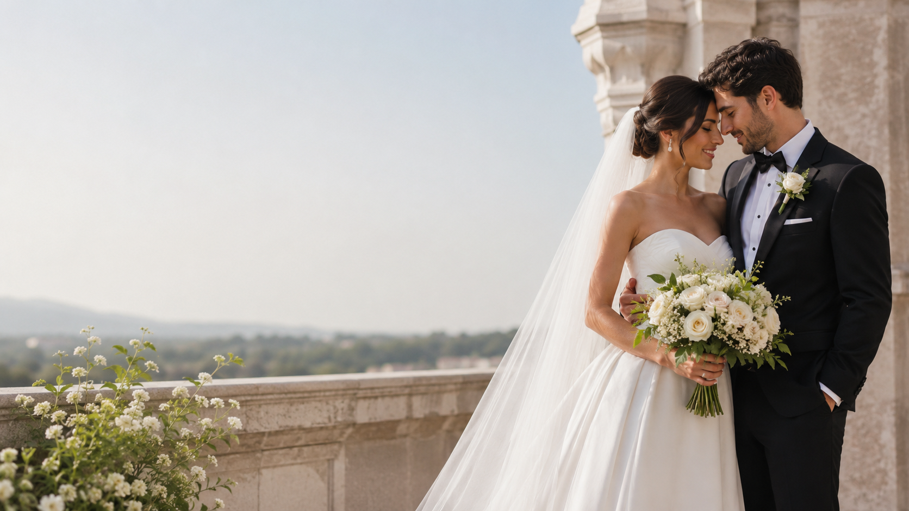

FAQ
A Few Things You May Be Wondering
What types of events do you plan?
Vow & Veil Events supports weddings, milestone celebrations, private gatherings, corporate events, nonprofit events, and other special occasions throughout Southern California.
What is the difference between Full Planning and Partial Planning?
Full Planning is designed for clients who want support throughout the entire planning process. Partial Planning is for clients who have already started planning and need experienced help organizing what is in place, filling remaining gaps, and bringing everything together.
What does Day of Wedding Concierge include?
Day of Wedding Concierge is for couples who have already planned their wedding and want professional support managing the celebration itself. We oversee the timeline, vendor communication, ceremony and reception flow, personal details, and event day logistics.
When do you begin working with Day of Wedding Concierge clients?
We begin before the wedding day so there is time to review your plans, understand your vendor team, confirm important details, and prepare for a smooth transition into event day management.
Do you attend the rehearsal?
Rehearsal support can be included depending on the service selected and the needs of your wedding.
Do you travel?
Yes. Vow & Veil Events serves Southern California and can travel for events outside the immediate service area. Additional travel fees may apply depending on location.
Are you insured?
Yes. Proof of insurance can be provided to venues when required.
Can you work with the vendors I have already hired?
Absolutely. We are happy to step into an existing vendor team and work collaboratively with the professionals you have already selected.
Do you offer services for events other than weddings?
Yes. Vow & Veil provides planning and coordination for milestone celebrations, private gatherings, corporate events, nonprofit events, and other special occasions.
How do payments work?
A retainer is required to reserve your date. The remaining payment schedule will be outlined in your agreement based on the service selected.
What happens if our plans change?
Changes, rescheduling, and cancellation terms are outlined in your service agreement so expectations are clear from the beginning.
How do we get started?
Complete the inquiry form with a few details about your event. We will review your information and connect with you about availability, services, and next steps.
Still have questions?
Reach out and we will be happy to provide the information you need.
Start Your Inquiry